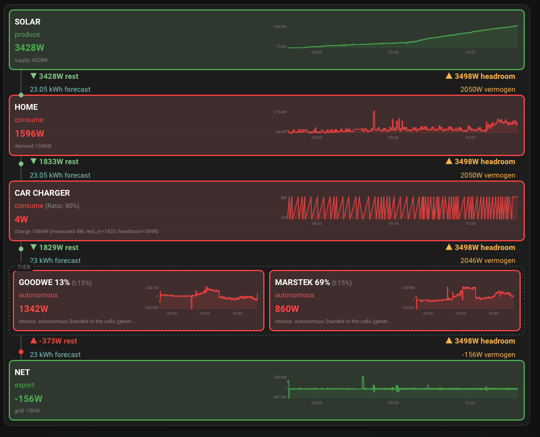

It decides, several times a minute, which of your energy devices should take the next available watt and which should give one back — with your grid peak as the ceiling on every one of those decisions.
A house with solar panels, one or two batteries and a car charger has a scheduling problem. The sun produces a surplus that has to go somewhere. The house draws a load that has to come from somewhere. Each device has its own app, its own idea of "self-consumption", and no knowledge of the others. Left alone they compete: the car charger and the battery both grab the same surplus, and at dusk both discharge into a house that only needs one of them.
Energy Balancer puts those devices in a single line and gives them an order of precedence. Every tick it works out how much surplus or deficit there is, walks the line from front to back handing out what is left, and walks back handing out how much room remains before the grid limit is hit. Each device then gets one instruction: charge this much, discharge this much, hold, or regulate yourself.

That screenshot is the whole idea. Solar produces 3428 W and hands 3428 W of rest down the chain. The house takes 1596 W and passes 1833 W on. The car charger takes almost nothing. What survives reaches the two batteries, which share a position and are therefore treated as one pool. Whatever nobody wanted ends up at the grid — here, 156 W exported.
Now read the right-hand column: 3498 W headroom, unchanged at every step. That is your import limit travelling back up the chain, and it is what none of these cells may cross.
Plenty of tools divide up a solar surplus. What this one does that they generally do not is treat your grid peak as a hard ceiling on every decision, continuously — rather than as an alarm that goes off once you are already over it.
The import limit is what travels back up the chain as headroom, and it
bounds what every cell is allowed to take. That includes the forced modes: telling a
battery to charge means "charge hard", not "charge regardless". A forced
charge that quietly raises your monthly peak is a defect, and there is no setting that
permits it.
This matters because a peak is not an ordinary running cost that a good day can win back. It is a high-water mark: on a capacity tariff, one careless quarter of an hour sets a price for the entire period, and nothing done afterwards lowers it again.
It is not a device integration. Energy Balancer never talks to an inverter, a charger or a battery. It reads the sensors you already have and it calls the scripts or services you already wrote. Everything vendor-specific stays on your side of the line, which is why it works with hardware the author has never seen.
It is also not a scheduler or a tariff optimiser. It has no clock and no price curve of its own. It answers one question — where does this watt go right now — and it answers it from measurements, not from a plan.
Devices are modelled as cells in a chain. A cell sees only its two neighbours: what the cell before it left over, and how much room the cell after it still has. There is no global state and no central optimiser. Add a cell, remove a cell, reorder them — nothing else has to change.
Each cell has a position number. Lower gets served first. Give two cells the same position and they stop competing: they become a single pool with one shared state of charge target, and whatever the pool is told to do is split between them in proportion to how much room each one still has.
The mode is the policy you choose — may this cell charge from the
grid, only from surplus, or should it be left alone entirely. The
action is what the hardware is measured to be doing right now.
They are independent, and every combination is meaningful. A cell can be set to
autonomous and still be observed to discharge; that is not a
contradiction, it is the whole point.
Start here if you are installing: Installation → Configuration → Cells. Leave observer mode switched on until the numbers look right; the integration will compute and publish everything without touching a single device.
generate_dashboard and set_option.
Dashboard
The bundled Lovelace cards and how they are installed.
Troubleshooting
Nothing charges, nothing actuates, values look wrong.
| What | Why |
|---|---|
| Home Assistant 2024.6.0 or newer | Config-entry migrations and the selector API used by the setup wizard. |
| A solar production sensor, in W | Required. Without it there is no surplus to distribute. |
| A house consumption sensor, in W | Required. |
| A grid power sensor, in W (+ = import) | Required. Also the basis for peak protection. |
| One script or service per steerable device | Optional at first — in observer mode nothing is called at all. |